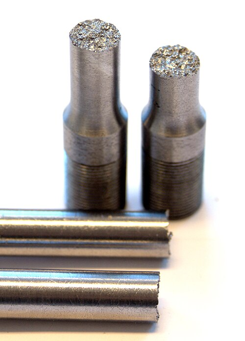
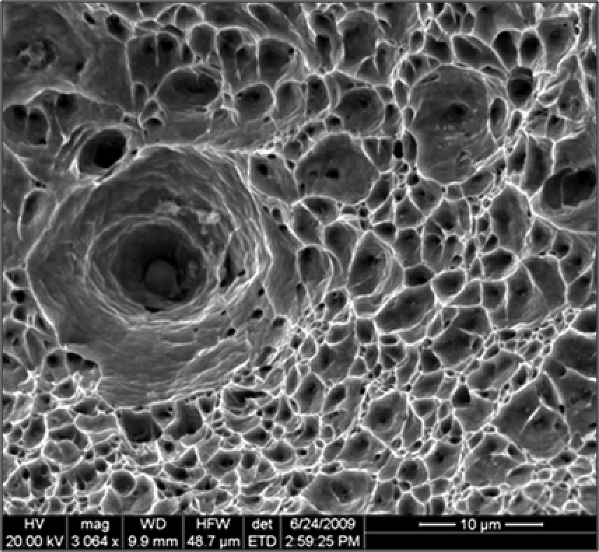
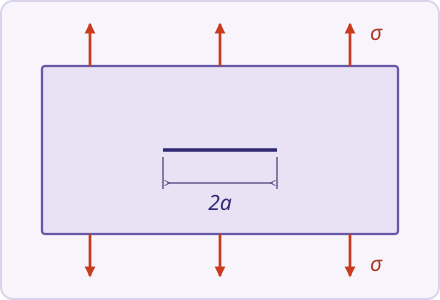

Historical accidents that gave birth to Fracture Mechanics
Investigations of ship and aircraft failures show how material toughness, structural details, and repeated loading influence crack initiation and growth.
In 1943 the tanker fractured while moored in Portland, Oregon. Wartime investigations examined cold-temperature notch toughness alongside crack initiation at structural details, welding, and residual stresses. Welded hulls could let a crack travel a long distance once it started.
Using a 27 J Charpy criterion, NIST reported transition temperatures of about 40 °C longitudinally and 70 °C transversely for recovered hull plate. The estimated seawater temperature was −2 °C. The investigators also examined the wrought-iron rivets and their slag inclusions. The iceberg strike initiated the damage, and the response of plates and joints influenced the subsequent flooding.
The recovered samples tell us how those materials could respond in the cold. The test result alone cannot reconstruct how every plate and joint failed during the collision.
The Comet investigation showed how small-radius corners in nearly rectangular cabin windows and other openings concentrate tensile stress. The local stresses were higher than designers had anticipated. Countersunk fastener holes near a corner could raise the stress further. These details made the pressure cabin vulnerable to fatigue under repeated pressurization.
In 1954, the de Havilland Comet G-ALYP broke up near Elba. Investigators found fatigue cracking near the rear roof opening for a direction-finding antenna. They identified the edge of a nearby countersunk bolt hole as the probable crack origin. A second breakup near Naples that year was consistent with a similar failure, although too little wreckage was recovered to establish the cause.
In a separate full-scale test, investigators repeatedly pressurized Comet G-ALYU in a water tank. The cabin ruptured at a corner of the forward escape-hatch window. As an aircraft climbs and descends, the changing cabin pressure differential cycles the stress in the skin. Repeated cycles can initiate and grow a fatigue crack at a highly stressed detail. As the crack grows, the cabin can fracture at a pressure differential it had previously carried.
This case connects fatigue crack growth under repeated loading with final fracture at a critical flaw size. Opening shape and corner radius affect stress concentration. The stress intensity factor and fracture toughness relate the applied load to the critical crack size.
The cabin skin tore at the forward port-side escape hatch of G-ALYU. This view from inside the airframe shows the window opening and the ruptured skin below it.
An AlMgSi aluminium-alloy specimen after tensile fracture. Local necking and the cup-and-cone surface profile show the plastic deformation accompanying failure.
Plastic deformation near the crack accompanies ductile tearing. In many metals, voids nucleate near particles or inclusions, grow, and join to form a crack. A round tensile bar may neck and leave a cup-and-cone fracture with a fibrous center and inclined shear lips. The amount of visible overall deformation also depends on specimen geometry and constraint.
Brittle fracture

This nodular-graphite cast-iron specimen fractured with little visible necking. The source identifies this specimen’s failure as brittle and notes that nodular cast irons usually show ductility.
A crack can travel rapidly with little overall plastic deformation. Cleavage in ferritic steel typically runs through grains along crystallographic planes. Brittle separation can also occur along weakened grain boundaries.
MD simulation results
Ductile Fracture
As the crack opens, its tips blunt and bands of deformation spread into the surrounding material.
Brittle Fracture
The crack extends across the specimen, with deformation concentrated in narrow bands.
Ductile tearing and brittle fracture can occur in different regions of one surface. Temperature, loading rate, and constraint around the crack tip influence which mechanism dominates.
A Charpy impact test strikes a notched bar with a pendulum and measures the absorbed energy. Repeating the test at different temperatures helps characterize how the fracture response changes. The ship cases show how impact tests help assess fracture in cold service.
Read the fracture surfaces (fractography)
Start at low magnification to locate the likely origin and trace the crack path. Use higher magnification to look for dimples, cleavage facets, or exposed grain boundaries.
Locate an origin on the fracture face
Use directional markings to trace crack growth backward. At the suspected origin, inspect the fracture face and specimen edge for a notch, inclusion, or other local defect.
Describe the crack path and mechanism. A transgranular crack crosses grains. An intergranular crack follows grain boundaries. Dimples indicate local plastic rupture, while cleavage facets indicate crystallographic separation. Grain-boundary surfaces can also contain dimples. NBS fracture-surface investigation

Dimples
Ductile fracture dimples
These cup-shaped dimples mark where microscopic voids grew and joined. The large dimple on the left shows the deep cavity and raised rim.
A notched steel specimen shows fine dimples close to the notch and cleavage facets farther across the ligament. If low-magnification evidence places the origin at the notch, the sequence is consistent with initial ductile tearing followed by cleavage. The dimples show where voids joined. The facets show where the crack crossed grains by cleavage.
Ductile-to-brittle transition
Many ferritic steels absorb little impact energy on the cold lower shelf and much more on the warm upper shelf. In between, ductile tearing and cleavage can appear on the same fracture surface. Cooling increases the stress required for plastic flow, making cleavage more competitive at a loaded notch.
A pronounced transition is characteristic of many body-centered-cubic (BCC) metals, including ferritic steels. Common face-centered-cubic (FCC) alloys, including austenitic stainless steels and aluminium alloys, generally retain substantial ductility on cooling.
The ductile-to-brittle transition temperature (DBTT) depends on the criterion. A temperature at 27 J, the midpoint between the energy shelves, and the temperature at 50% shear fracture appearance may differ. Use multiple specimens and temperatures to fit a transition curve, particularly where results scatter widely. Report the criterion, specimen, test conditions, and uncertainty with the result.
A Charpy series gives 20 J at −40 °C and 50 J at −20 °C. Estimate T27 J by linear interpolation between those points.
The fraction of the interval is (27 − 20)/(50 − 20) = 7/30. Therefore T27 J = −40 + (7/30)(20) = −35.3 °C, or about −35 °C. This is a local interpolation estimate. Experimental uncertainty requires additional test results.
Charpy supports a notched bar on two anvils and strikes opposite the notch. Izod clamps one end and strikes the free part above the notch on the notched side. For metallic specimens, the absorbed energy in joules is the drop in pendulum potential energy from the release height to the peak after impact, corrected for machine losses.
The absorbed energy reflects the specimen’s response to impact, including plastic deformation and fracture. Use Charpy data at multiple temperatures to study a steel’s transition. The measured energy is specific to the setup. Compare results at matched method, specimen dimensions, notch geometry, orientation, temperature, striker geometry, and impact speed.
The pendulum loses 110 J between release and the peak after fracture. The correction for machine losses over this swing is 2 J. The specimen’s reported absorbed energy is 110 − 2 = 108 J.
An elliptical hole in a plate under tension raises the local stress at its tips. The dimensionless stress concentration factor Kt compares the peak stress with the remote stress. The Inglis solution assumes an effectively infinite, linearly elastic plate under tension perpendicular to the long axis.
Kt = σmax/σnom = 1 + 2a/b = 1 + 2√(a/ρ)
ρ = b2/a
A circular hole gives Kt = 3. As the ellipse sharpens toward a crack, the elastic peak stress grows without bound. For a sharp crack, the stress intensity factor KI sets the magnitude of the near-tip field.
Stress around an elliptical hole
Change the semi-axes to see how the shape affects the stress. The remote tension stays at 50 MPa.
b ≤ a
Tip radius ρ
1 mm
Concentration factor Kt
5
Peak stress σmax
250 MPa
Stress heat map
Vertical stress σyy (MPa)
≤050 nominal250 peak
Dots mark the stress peaks at both tips. The dashed line shows the path of the stress profile.
An elliptical hole has a = 4 mm and b = 2 mm. The remote tensile stress is 50 MPa, perpendicular to the long axis.
Kt = 1 + 2(4/2) = 5. The peak elastic stress is 5 × 50 = 250 MPa.
Try reducing b to 1 mm at the same a. The tip radius falls from 1 to 0.25 mm and the peak stress rises to 450 MPa.
Griffith’s energy balance
A growing crack releases mechanical energy and creates new surfaces. The energy release rate G is the decrease in mechanical potential energy, comprising elastic strain energy minus the work of external loads, per unit increase in projected crack area. That area counts the advancing crack once. Two opposing surfaces are created, so the ideally brittle Griffith model has a resistance Gc = 2γs, where γs is the energy per unit area of one surface.
E′ = E in plane stress and E′ = E/(1 − ν2) in plane strain, where ν is Poisson’s ratio. Plane stress allows deformation through the thickness. Plane strain approximates a constrained interior with very little strain in that direction. The thickness comparison below illustrates both conditions.
For a central through crack of total length 2a in an effectively infinite plate under uniform tension σ, the energy release rate and critical tensile stress are
G = πaσ2/E′
σc = √(E′Gc/(πa))
Crack extension becomes energetically possible when G reaches the resistance. At fixed remote stress in this ideal model, G increases as the crack extends while Gc stays constant, allowing unstable growth. In metals, plastic deformation dissipates additional energy, so the measured fracture resistance can greatly exceed 2γs.
At fixed remote stress, the energy release rate increases with crack half-length. The intersection marks the critical half-length for an ideally brittle plate.
Predict fracture stress with Griffith theory
A large glass plate in plane stress has E = 70 GPa, γs = 1.0 J/m2, and a central crack of total length 0.20 mm. Find σc for ideally brittle growth.
Use the half-length a = 1.0 × 10−4 m and Gc = 2.0 J/m2. Substituting into √(E′Gc/(πa)) gives 21.1 MPa.
Modes of fracture
The three loading modes describe the relative motion of the two crack faces. The crack front is the line where the faces meet the intact material.
Mode I · Opening
The faces separate normal to the crack plane.
Mode II · Sliding
The faces slide within the crack plane, perpendicular to the crack front.
Mode III · Tearing
The faces slide within the crack plane, parallel to the crack front.
Arrows show relative displacement. In Mode III, “out-of-plane” means motion out of a cross-section perpendicular to the crack front. Twisp, Wikimedia Commons, public domain
A stress intensity factor sets the amplitude of the leading near-tip elastic stress field for its loading mode. The three amplitudes are KI, KII, and KIII. Each depends on the applied loads, crack size, and geometry.
Mode I under remote tension
KI = Yσ√(πa)
G = KI2/E′
The dimensionless factor Y accounts for geometry and loading. Use Y = 1 for a central through crack in an effectively infinite plate under uniform tension. Here a is half the total crack length. For an edge crack, a is its depth and a different Y applies. Use metres for a with σ in MPa to obtain MPa√m.
The second equation relates the Mode I elastic field to Griffith’s energy release rate. In plane stress, E′ = E. In plane strain, E′ = E/(1 − ν2).
Mode I stress intensity by geometry
For the three test specimens, F is the applied force, B is the thickness, and α = a/W is the ratio of crack length to specimen width as measured in each sketch. Use newtons and metres to obtain KI in Pa√m.
Griffith’s center crack

The plate is effectively infinite. The remote tensile stress is σ, and a is the half-length of the through crack.
KI = σ√(πa)
Compact tension, C(T)
Two pins pull through the holes and open the crack. Measure a and W from the pin load line. The total crack length includes the starter notch and fatigue precrack.
The center roller loads the bar over two supports with span S = 4W. Measure a from the tensile surface to the fatigue crack tip. Here W is the beam depth.
The pins open the crack. Measure a and W from the pin load line. The sketch labels the initial crack length a0 and the remaining ligament b0. Kong et al., Figure 2 · CC BY 4.0
Use each calibration with the geometry and loading shown. For a toughness test, check the specimen proportions, crack-length range, and precrack requirements in the applicable standard.
A central through crack is 4.0 mm long in a wide plate under 150 MPa tension. With a = 0.0020 m and Y ≈ 1, the stress intensity is 150√(π × 0.0020) = 11.9 MPa√m. If the total length increases to 16.0 mm under the same stress and Y is still approximately 1, KI doubles to 23.8 MPa√m.
Stress field near the crack tip
Place the origin at the crack tip, with x pointing straight ahead and y normal to the crack plane. Measure distance r from the tip and angle θ counterclockwise from positive x. The crack faces lie behind the tip at θ = ±π.
Mode I loading opens the crack. In an isotropic, linearly elastic material, the leading crack-tip stresses vary as 1/√r. The stress intensity factor KI sets their amplitude; the angular functions below describe how each component varies around the tip.
The origin lies at the tip. Positive x points ahead of the crack; y is the opening direction. Angle θ is measured from positive x toward positive y.
Higher-order terms are omitted. These in-plane terms apply in both plane stress and plane strain; the out-of-plane stress differs between those conditions.
The approximation applies outside the crack-tip process or plastic zone, in the elastic region where the leading term dominates. This region must also be close to the tip relative to crack length and specimen dimensions. The elastic formula diverges as r approaches zero; local yielding or other process-zone mechanisms limit its applicability there.
Directly ahead of the tip (θ = 0), the leading terms reduce to
When stresses near the tip reach the yield condition, the material deforms plastically in a zone around the crack tip. Under small-scale yielding, the plastic zone is much smaller than the crack length and the remaining ligament ahead of the crack. This leaves an elastic region outside the zone, still close to the crack tip on the scale of the specimen, where KI governs the stresses.
Let rp be a characteristic plastic-zone radius and σys the yield strength. In plane stress, setting the opening stress directly ahead of the tip equal to σys gives a first estimate. The greater constraint in plane strain gives a smaller estimated radius.
Plane stress
rp ≈ [1/(2π)](KI/σys)2
Plane strain
rp ≈ [1/(6π)](KI/σys)2
For KI = 30 MPa√m and σys = 450 MPa, the estimates are 0.71 mm in plane stress and 0.24 mm in plane strain. Compare these length scales with the crack and ligament dimensions. Stress redistribution, hardening, and constraint affect the actual shape and extent of the zone.
All three pure modes use the same stress intensity magnitude, fixed millimetre axes, and a yield strength of 450 MPa. Each contour marks where the von Mises equivalent stress from the leading elastic field reaches the yield strength. The dark line ends at the crack tip at (0, 0).
The circular first-yield contour has a radius of 2.12 mm.
At fixed yield strength, doubling K quadruples the distance from the crack tip to the contour. The plane-strain contours use the angular elastic field with ν = 0.30. The earlier 0.24 mm value for Mode I comes from the characteristic engineering estimate at 30 MPa√m.
Compare σyy at 0.25 mm and 1.00 mm directly ahead of the same fixed crack. If both points lie in the region where the leading term dominates, the ratio is √(1.00/0.25) = 2. The point four times closer has twice the opening stress.
Fracture toughness
Fracture toughness measures a material’s resistance to extension of an existing crack under specified conditions.
Thickness and crack-tip constraint
Take z along the crack front, through the specimen thickness B. At a traction-free face, stress normal to that face is zero. A thin specimen is often approximated by plane stress, with σzz ≈ 0. Material near its tip can contract and deform through the thickness.
In a sufficiently thick specimen, the surrounding material restrains that deformation in the interior. Plane strain approximates this region with εzz ≈ 0. Tensile stress develops along z, increasing constraint on plastic flow. Surface regions still have lower constraint.
A plane-strain KIc test needs both small-scale yielding and enough thickness to maintain high constraint in the interior. The specimen size check relates the crack-tip length scale to the test dimensions.
Conceptual thickness comparison. Plastic-zone shapes and relative sizes are illustrative. The stress state varies along a real crack front.
Compare the applied intensity with toughness
KIc is the Mode I plane-strain fracture toughness measured under conditions of predominantly linear elastic response. Under matching conditions, the fracture criterion is
KI = KIc
Toughness can depend on temperature, loading rate, crack orientation, and environment. When the plastic zone grows too large for small-scale yielding, use an elastic-plastic parameter such as the J-integral or crack-tip opening displacement (CTOD), within the chosen method’s limits. A resistance curve records how resistance changes during stable tearing. Whether extension becomes unstable also depends on how the applied driving force changes as the crack grows.
Vary the crack length
Consider a wide plate with a central crack, Y = 1, σ = 180 MPa, and KIc = 24 MPa√m. Assume monotonic Mode I loading, plane strain, and small-scale yielding. Move the slider to compare the driving force with the toughness.
Applied KI up to the thresholdCalculated for hypothetical larger flawsToughness KIc
KI = 14.3 MPa√m. Below the Mode I fracture threshold.
Setting KI = KIc gives a critical half-length of 5.66 mm. At this fixed remote stress, the driving force rises with crack length, so extension becomes unstable at the threshold. The dashed curve calculates KI for hypothetical larger flaws.
The toughness comparison addresses fracture under the stated load. Under cyclic loading, fatigue can extend a crack at peak stress intensities below KIc, as the Comet investigation illustrates.
Quantities used to describe fracture
Quantity
Unit
What it measures
Absorbed impact energy, Eabs
J
Energy absorbed in a specimen tested with a specified impact setup.
Energy release rate, G
J/m2
Mechanical energy available per increase in projected crack area. Its critical value is Gc.
J-integral
J/m2
A crack-driving parameter used for elastic-plastic fracture under the applicable test conditions. A qualified initiation value is JIc.
Stress intensity, KI
MPa√m
Amplitude of the Mode I elastic crack-tip field. A qualified plane-strain critical value is KIc.
Find a critical edge-crack depth
A wide plate in tension has σ = 160 MPa and KIc = 30 MPa√m. Assume Mode I, plane strain, small-scale yielding, and Y = 1.12 over the relevant crack sizes.
Set KI = KIc. Then ac = (30/(1.12 × 160))2/π = 0.00892 m = 8.92 mm.
Estimate how strain rate shifts the transition in molybdenum
Molybdenum contains sharp cracks of half-length a = 2 µm. Take Young’s modulus E = 350 GPa and the energy per unit area of one new fracture surface γs = 2 J/m2. Its empirical yield-stress relation is
σy = 20.6 + 173600/T + 61.3 log10(ε̇)
Use numerical values with σy in MPa, T in kelvin, and the imposed strain rate ε̇ = dε/dt in s−1. Estimate the transition temperature at (i) 10−2 s−1 and (ii) 10−5 s−1.
Model. Assume a central through crack in a large plate under plane stress, and hold E, γs, and a constant. Estimate the transition by equating the yield stress with the ideally brittle fracture stress. The Griffith energy balance introduced above gives the fracture stress used here.
Logarithmic scale from 10−5 to 10−2 s−1.
Predicted crossover 229.0 K (−44.1 °C).
Yield strength σyFracture stress σc
Calculate the fracture stress. Two new surfaces require Gc = 2γs = 4 J/m2. Use the half-length a = 2 × 10−6 m and E = 350 × 109 Pa.
σc = √[2Eγs/(πa)] ≈ 472.0 MPa
Apply the crossover condition. Set σy(T, ε̇) = σc. Rearranging the supplied relation gives
T = 173600 / {472.0349 − 20.6 − 61.3 log10(ε̇)}
The result is in kelvin. Additional digits in the fracture stress are retained when evaluating the denominator.
Substitute each strain rate. At 10−2 s−1, the yield law becomes σy = −102.0 + 173600/T, giving T = 173600/(472.0349 + 102.0). At 10−5 s−1, it becomes σy = −285.9 + 173600/T, giving T = 173600/(472.0349 + 285.9).
The higher strain rate raises the yield stress at a given temperature, so the crossover with the fixed fracture stress occurs at a higher temperature. In this model, yielding occurs first on the warmer side of the crossover and ideally brittle fracture occurs first on the colder side. The estimates depend on the assumed flaw size and fracture model. A measured Charpy transition temperature additionally depends on its chosen energy or fracture-appearance criterion.
Adapted from V. Raghavan, Materials Science and Engineering: A First Course, Example 12.3, PHI Learning. The source’s Young’s modulus Y is written E, with yield stress σy, fracture stress σc, crack half-length a, and surface energy γs following this lesson’s notation. Publisher reference
Fracture toughness testing
Grow a sharp fatigue precrack from a machined starter notch. Load the specimen so the crack opens in Mode I, and record force and displacement. Use the measured crack length and specimen geometry to determine resistance to crack extension.
K, J, CTOD, and resistance curves under the applicable procedures.
ASTM E399 directs cleavage-fracture testing to E1921 and E1820. This connects the earlier ferritic-steel transition discussion to an appropriate precracked-specimen test. A Charpy transition temperature and the Master Curve reference temperature characterize different test responses.
From the specimen to a qualified result
Document the material, crack orientation, temperature, loading rate, and specimen dimensions. Produce and measure a fatigue precrack meeting the chosen method.
Record force F against the prescribed displacement. For the E399 procedure, evaluate the record with its initial elastic slope and 95% secant construction to determine FQ.
Calculate conditional toughness KQ from FQ and the measured geometry. Apply the force-record, size, precrack, and other prescribed checks.
Report KIc only when qualification succeeds. Otherwise retain the conditional result and select a suitable size or test procedure.
The 95% secant has 95% of the initial elastic slope. It is a prescribed evaluation construction. Microscopic damage or crack extension can begin before its intersection with the record. Records containing earlier peaks require the full selection rules for FQ.
Specimen size check
For ASTM E399-24 qualification, compare the remaining ligament W − a with the minimum calculated from the conditional toughness KQ and yield strength σys.
W − a ≥ 2.5(KQ/σys)2
Here W is specimen width and a is the measured crack length, including the fatigue precrack. Use the 0.2% offset yield strength at the test conditions. With KQ in MPa√m and σys in MPa, the minimum is in metres.
Check that a/W is between 0.45 and 0.55, that W/B is permitted for the specimen geometry, and that Fmax/FQ ≤ 1.10. Verify the fatigue-precrack and other test requirements before reporting KIc.
A hypothetical C(T) test has W = 40 mm, B = 20 mm, a = 20 mm, and 0.2% offset yield strength σys = 450 MPa at the test temperature. Use the synthetic force–CMOD record below and the C(T) shape factor f(0.5) = 9.659. Assume the remaining specimen, precrack, temperature, and loading requirements have been documented as satisfied for an E399 test.
Read the conditional force. The smoothly rising record intersects the 95% secant at FQ = 15.00 kN. Its maximum is Fmax = 16.05 kN.
Calculate toughness. With force in N and lengths in m, KQ = [FQ/(B√W)] f(a/W). Substitution gives [15,000/(0.020√0.040)] × 9.659 = 36.22 × 106 Pa√m = 36.2 MPa√m.
Check the force ratio.Fmax/FQ = 16.05/15.00 = 1.07 ≤ 1.10.
Check the remaining ligament. The minimum is 2.5(36.22/450)2 m = 16.2 mm. The 20 mm ligament satisfies the E399-24 size requirement.
The original slope is 131.58 kN/mm and the secant slope is 125.00 kN/mm. The secant crosses at 0.120 mm and 15.00 kN.
Interpretation. Both calculated checks pass. Together with the stated assumption that all remaining requirements are satisfied, this hypothetical test yields KIc = 36.2 MPa√m. An experimental report must substantiate those remaining requirements.
A second record gives FQ = 10.0 kN and Fmax = 11.8 kN. The ratio is 1.18, above 1.10. The result remains conditional KQ. Meeting a size requirement cannot compensate for this failed force-record check.
Identify the flaw and loading mode, calculate how strongly the load drives the crack, and compare that result with toughness measured under suitable conditions.
Measure impact energy and estimate notch stress
Eabs = mg(hrelease − hrise) − Eloss
Charpy and Izod use the pendulum energy drop corrected for machine losses. Compare absorbed energies at matched test conditions.
Kt = 1 + 2√(a/ρ), σmax = Ktσ
This elastic stress concentration applies to an elliptical hole with half-length a, tip radius ρ, and remote tension perpendicular to its long axis.
Compare crack driving force with resistance
KI = Yσ√(πa), G = KI²/E′
Use the shape factor for the flaw geometry. In Mode I linear elasticity, E′ = E in plane stress and E′ = E/(1 − ν²) in plane strain. Crack extension becomes possible when G reaches resistance Gc, or when KI reaches the applicable toughness.
σc = √(E′Gc/(πa)), Gc = 2γs for ideal brittle growth
The Griffith stress above assumes an effectively infinite plate with a central through crack of total length 2a.
Check the size of the crack-tip plastic zone
σyy(r, 0) = KI/√(2πr)
Plane stress rp ≈ [1/(2π)](KI/σys)²
Plane strain rp ≈ [1/(6π)](KI/σys)²
The elastic opening stress grows as 1/√r ahead of the tip. For small-scale yielding, the estimated plastic zone should be small compared with the crack, ligament, and relevant specimen dimensions.
Qualify the measured toughness
KQ = [FQ/(B√W)]f(a/W)
This formula uses the C(T) shape factor and the conditional force FQ. For an ASTM E399 test, check the force record and remaining ligament.
Fmax/FQ ≤ 1.10, W − a ≥ 2.5(KQ/σys)²
Report KIc after all qualification requirements have been met. When elastic-plastic deformation or stable tearing governs, choose a test that reports J or CTOD toughness.